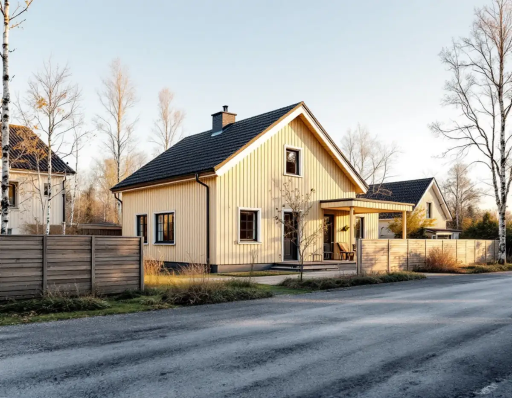
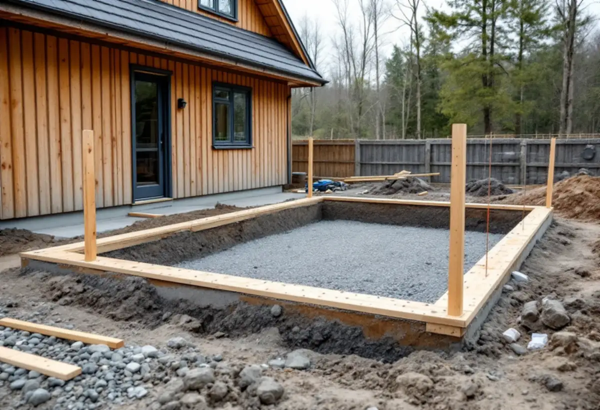

Platsbesök
Vi mäter avståndet till gränser, väg och strand och ser var tillbyggnaden kan stå.

En tillbyggnad nära tomtgränsen hänger ofta på ett papper: grannens skriftliga medgivande.
Beskriv jobbet kort.
Något blev fel. Kontrollera uppgifterna eller ring 08 12 410 276.
Vi tittar på jobbet på plats innan du får offert.
Du ser vad som ingår och vad det kostar.
Vi drar av ROT direkt och sköter ansökan.
Geal Entreprenad AB, Bromma. Org.nr 559303-7566.

I Österåker kan grannen dessutom vara en vägförening, och kommunens geodataenhet kan staka ut huset innan grunden gjuts. Geal Entreprenad AB bygger till villor och småhus som total entreprenad och lämnar ett skriftligt kostnadsförslag efter ett gratis platsbesök. Här är stegen från medgivande till lägeskontroll.
Österåkers bygglovenhet gick efter lagändringen den 1 december 2025 igenom reglerna vid ett digitalt informationsmöte. En lovfri tillbyggnad får omfatta sammanlagt 30,0 kvadratmeter brutto- eller öppenarea på huvudbyggnaden, ska vara lägre än taknocken och gäller både inom och utanför detaljplan. Hamnar den närmare gränsen än 4,5 meter, eller närmare än 30,0 meter från ett järnvägsspårs mitt som Roslagsbanan, krävs bygglov om inte grannen skriftligen har medgett placeringen.
Granne kan också vara huvudmannen för en allmän plats eller järnvägens infrastrukturförvaltare, och kommunen kan medge åtgärder närmare än 4,5 meter mot allmän plats. Där vägarna har enskilt huvudmannaskap krävs enligt bygglovenheten en förening bestämd genom förrättning av Lantmäteriet för att lämna medgivandet.
Boverket påpekar att alla berörda grannar måste medge, och att gränsen kan vara fastighetsgräns, tomtgräns, gräns mot arrenderad mark eller mot en allmän plats. Ett lämpligt sätt är att grannarna skriver under en situationsplan och fasadritningar som visar hur tillbyggnaden ska se ut och placeras.
Hur långt ett medgivande räcker prövades av Mark- och miljööverdomstolen i en dom från oktober 2024. Målet gällde ett startbesked för en tillbyggnad av ett enbostadshus närmare gränsen än 4,5 meter, och grannarna hävdade att de bara hade godkänt det de fått se i en illustration. Domstolen skrev att det är den som anmäler eller söker som har bevisbördan för att ett medgivande lämnats och för vad det omfattar, och att ett underlag för medgivandet bör vara entydigt om vad det omfattar – till exempel genom att hänvisa till ritningar.
I det fallet hade tillbyggnaden placerats längre in på tomten än i underlaget, men avvikelserna bedömdes som små och rymdes inom medgivandet. Startbeskedet stod sig. Slutsatsen för den som bygger till är ändå tydlig: ju mer exakt ritningen är när grannen skriver under, desto mindre utrymme för tvist efteråt. Vi tar därför fram en måttsatt situationsplan och fasader innan medgivandet hämtas.
Bygglovenheten betonar att plan- och bygglagens krav och byggreglerna gäller även för en lovfri åtgärd, och att kravet på anpassning gäller. En lovfri tillbyggnad kan dessutom betraktas som en betydande olägenhet, till exempel på grund av insyn eller försämrad utsikt, och det kan leda till tillsyn i efterhand. Den som vill ha beskedet i förväg kan söka frivilligt bygglov.
Kommunen beskriver sig som en skärgårdskommun med 1 100 öar och 93 mil strandlinje. Bygglovenheten påminner om att även bygglovfria och anmälansfria åtgärder kräver ansökan om strandskyddsdispens, och att lagändringen inte ändrade något i strandskyddet. Inom särskilt värdefulla byggnader eller områden är tillbyggnaden lovpliktig även om den annars hade varit lovfri, och det gäller också utanför detaljplan.
Åtgärder i en lovfri tillbyggnad kan kräva anmälan, till exempel när en eldstad, ventilation eller vatten och avlopp installeras eller när den bärande konstruktionen eller brandskyddet ändras väsentligt.
Om utstakning behövs står i bygglovet. Kommunens geodataenhet utgår från situationsplanen och planritningen, och byggnaden ska vara måttsatt mot fastighetsgränsen för att utstakningen ska bli rätt. En grovutstakning med sprayfärg eller stakkäppar görs före markarbetet och passar när det ska sprängas eller grävas mycket. Finutstakningen görs när marken är klar, med spik i profiler eller i påle – profilerna sätter byggaren upp.
Krävs en lägeskontroll för slutbeskedet mäts byggnadens läge i plan och höjd in, helst på färdigmonterade gjutformar före gjutning, och du får ett intyg. Är du osäker på var gränsen går kan enheten göra en gränspåvisning, men den har ingen juridisk verkan och inga nya gränsrör sätts ut. Mer om rivning och nybygge i kommunen finns under byggföretag i Österåker.
Vi mäter avståndet till gränser, väg och strand och ser var tillbyggnaden kan stå.
Detaljplan, strandskydd och kulturmiljöer kontrolleras i kommunens karta.
Situationsplan och fasader tas fram före grannmedgivandet.
Arbete, material och handlingar står på egna rader.
Grannar och eventuell vägförening skriver under, annars söks bygglov.
Läget stakas ut och kontrolleras innan grunden gjuts.
Rotavdraget är 30 procent av arbetskostnaden, högst 50 000 kronor per person och år och högst 75 000 kronor tillsammans med rutavdrag. Material och resor ger inget avdrag.
Skatteverket ger avdrag för en tillbyggnad av ett småhus om den sitter ihop med husets yttervägg till minst 75 procent av en sida eller har en dörr mot huset, och om bostaden är äldre än fem år. Ritningar och bygglovshandlingar ger inget avdrag. Vi drar avdraget direkt på fakturan för det arbete som omfattas.
Grundläggningen, hur nära gräns och strand tillbyggnaden hamnar, om det behövs sprängning och hur taket ska anslutas påverkar mest. Efter ett gratis platsbesök får du ett skriftligt kostnadsförslag.
Mer boyta i samma hus.
Tillbyggnad →Takbyte, takbesiktning och plåtarbeten.
Takläggare i Österåker →Svinninge, sommarvillor och sportstugor.
Takrenovering i Österåker →Uthyrning, kulturmiljö och fornlämningar.
Attefallshus i Österåker →VA-utbyggnad, öar och vattensmarta val.
Badrumsrenovering i Österåker →Rivning, markarbete och gatukostnader.
Byggföretag i Österåker →Sommarvillornas fasadkulörer.
Fasadmålning i Österåker →Skärgårdshus, fritidshus och villor i Österåker.
Fasadrenovering i Österåker →Varsamhet, kulturvärden och kustlägen i Österåker.
Fönsterbyte i Österåker →Sommarvillorna i Svinninge.
Fönsterrenovering i Österåker →Jämna golv och färre trösklar.
Golvläggare i Österåker →Golv i sommarhus som blivit bostad.
Golvslipning i Österåker →Helårshus, brunn och avlopp.
Köksrenovering i Österåker →Sommarvillor, röda stugor och efterkrigsvillor.
Målare i Österåker →Plåtdetaljer på sommarvillorna.
Plåtslagare i Österåker →Bryggor, altaner och äldre snickerier.
Snickare i Österåker →Lertegel, lovfrågan och återbruk av pannor.
Takbyte i Österåker →Sommarvillan blir åretruntbostad.
Tapetsering i Österåker →Fritidshuset, värmen och anmälan.
Totalrenovering i Österåker →Eller ring 08 12 410 276, mån–fre 08–17.
Beskriv jobbet kort.
Något blev fel. Kontrollera uppgifterna eller ring 08 12 410 276.